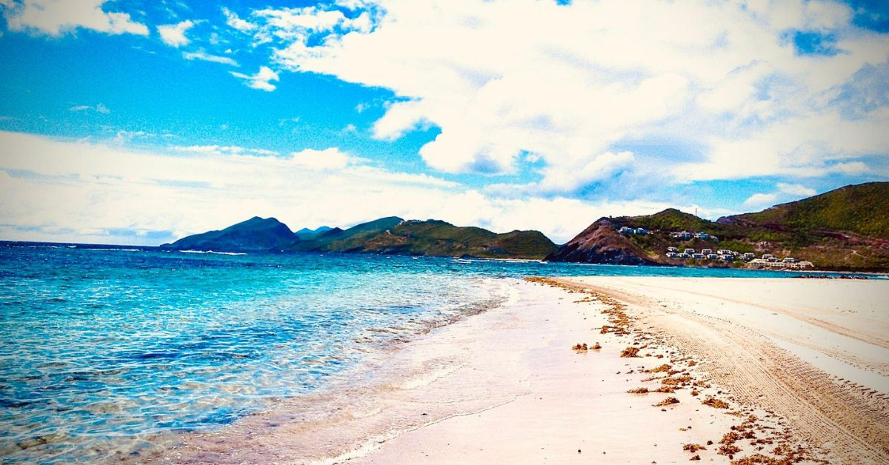
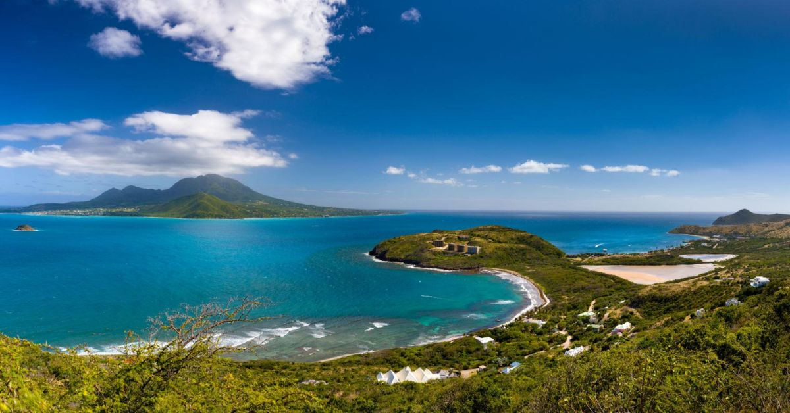
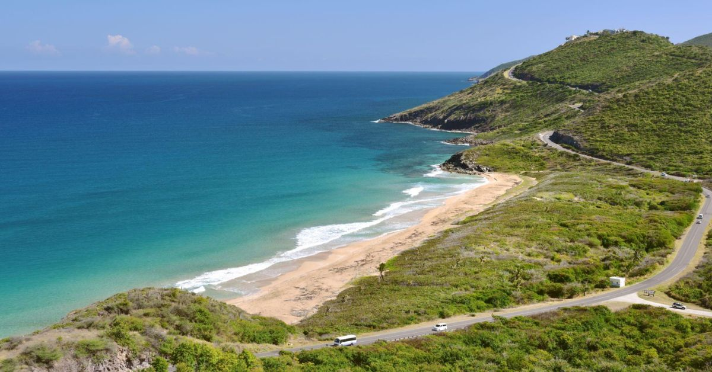
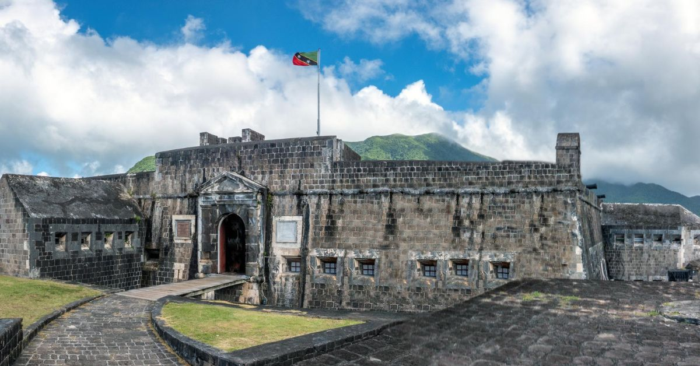
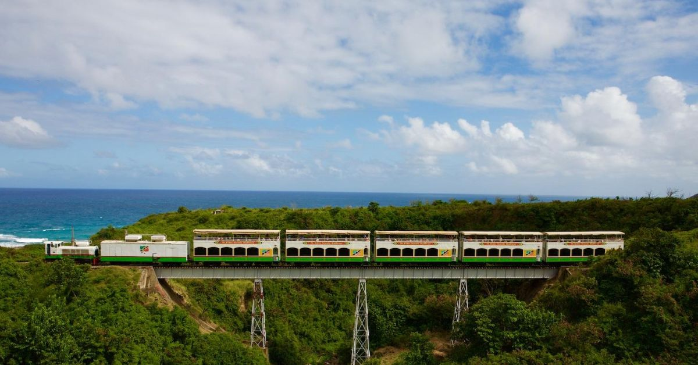
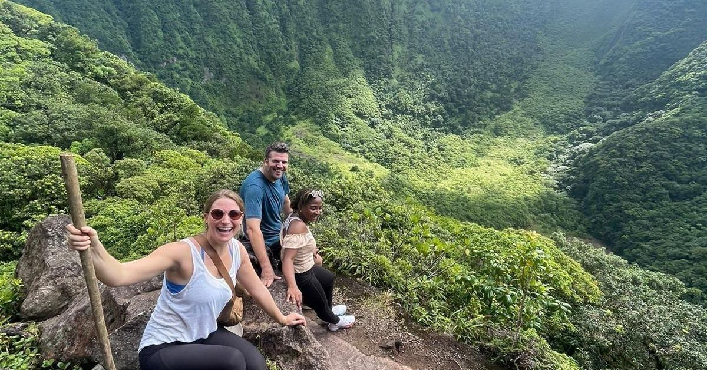
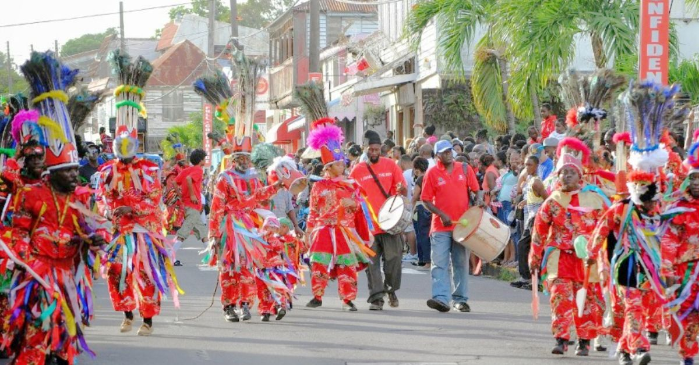
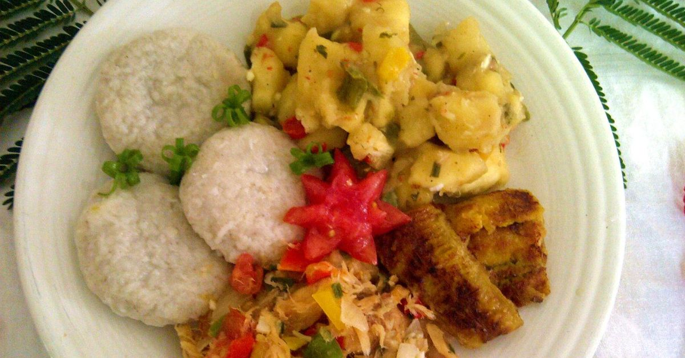
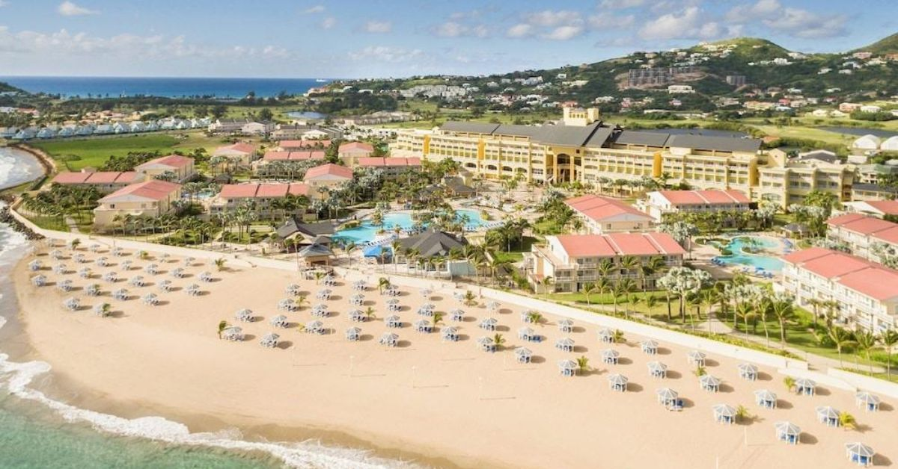
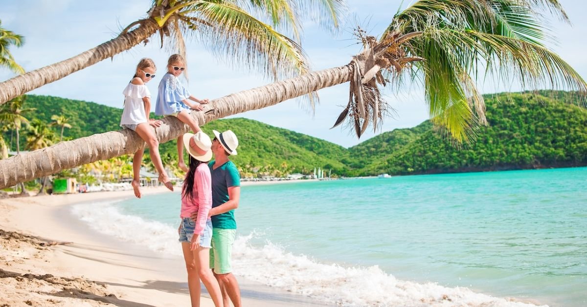

Discover St. Kitts and Nevis
Sun, Sea, Adventure and Culture in One Beautiful Destination
Sun, Sea, Adventure and Culture in One Beautiful Destination



St. Kitts and Nevis is a beautiful twin-island nation located in the Eastern Caribbean. Known for its stunning beaches, rich history, tropical rainforests, and welcoming people, the islands attract visitors from all around the world.
Whether you are seeking relaxation, adventure, cultural experiences, or luxury accommodations, St. Kitts and Nevis offers something for every traveler.
Visitors can enjoy crystal-clear waters, explore historic landmarks, experience local festivals, and discover the natural beauty that makes these islands unique.



Brimstone Hill Fortress is one of the Caribbean's most impressive historical landmarks and a UNESCO World Heritage Site. The fortress offers breathtaking views of neighboring islands and the Caribbean Sea.
Ride along the island's coastline and through historic sugar plantations while enjoying spectacular views of mountains and villages.
Hike to the summit of Mount Liamuiga, a dormant volcano surrounded by lush rainforest and home to some of the most beautiful views in the Caribbean.


The culture of St. Kitts and Nevis is a vibrant blend of African, European and Caribbean traditions. Music, dance, storytelling and celebrations are important parts of everyday life.
Carnival is one of the country's biggest festivals. Visitors enjoy colorful costumes, exciting parades, calypso competitions and cultural performances.
The islands are also known for delicious local dishes such as goat water, stewed saltfish, fresh seafood and tropical fruits.


St. Kitts and Nevis combines adventure, relaxation, history and culture into one unforgettable destination. Whether you're looking for a romantic getaway, family vacation or solo adventure, the islands have something special for everyone.